7+ years of professional experience in Level Design. Specialized in massive PvP spatial balancing, systemic open-world standards, and technical iteration workflows.
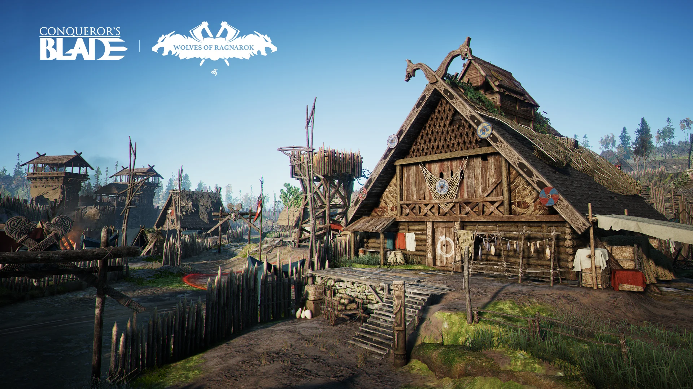
SHIPPED / MASSIVE PVP
Conqueror's Blade
Designed and iterated 15v15 siege maps with a focus on asymmetric spatial balance and route congestion control.
The primary design goal was to ensure that combat remains
uncertain until the final moments.
To achieve this, the level intentionally adopts a
layered, progressive terrain and environment structure,
reducing reliance on
static wall defenses
while increasing the complexity of
urban and street-level combat.
This allows both attackers and defenders to engage in
dynamic counterplay,
employing a variety of tactics and strategies to
contest key objectives,
ultimately delivering a strong and engaging gameplay experience.
Across multiple seasons, the map maintained a
long-term win-rate balance within a 46–54% range,
and became
one of the most popular maps in competitive league play.
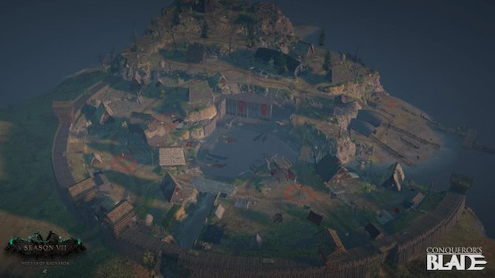
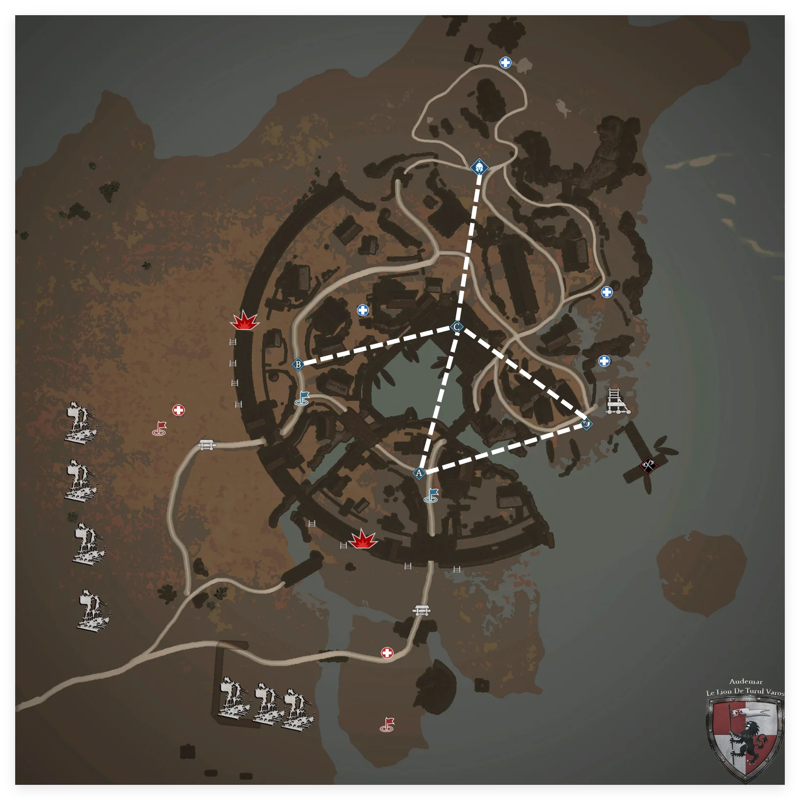
// Strategic routing and objective hierarchy for Heilung Fjord.
Whitebox Tactics Iteration
Demonstrating how spatial constraints shape combat encounters. Focus on multi-route pressure and line-of-sight management for large-scale unit battles.
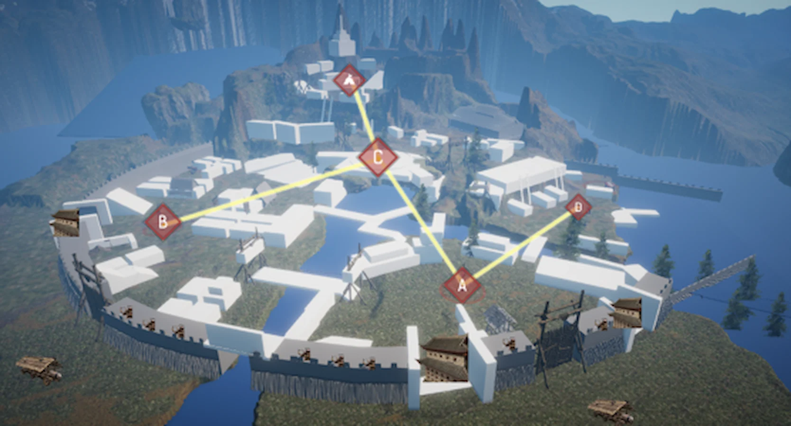
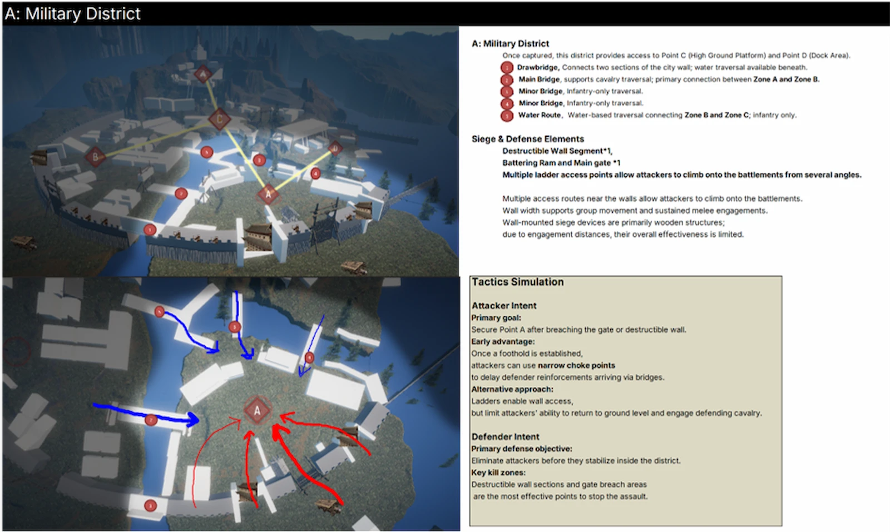
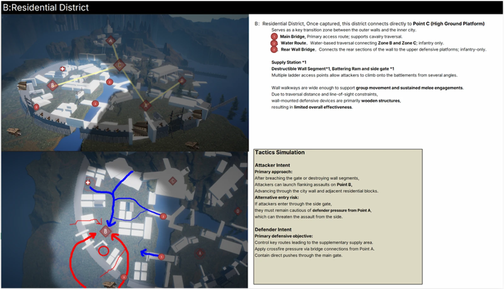
// Evolution of spatial logic and route congestion from early blockout.
Gameplay Showcase
Footage sourced from web for design demonstration purposes only.
Heilung Fjord Final Delivery
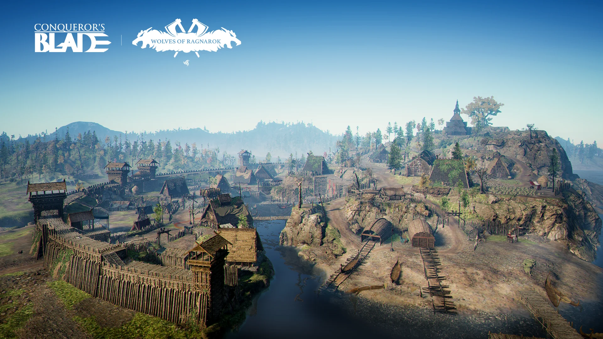
// Final environment preserving spatial logic while improving visual readability.
FOR MORE DETAILED BREAKDOWNS OR TO REQUEST A FULL PORTFOLIO PDF, PLEASE CONTACT ME VIA E-MAIL.
Standardization & White Paper
Authored the "Level Environment White Paper" to bridge design intent and technical execution. Focused on 3C Data Management and Environment Standardization.
The following data has been anonymized and desensitized for demonstration purposes, and is included to showcase design and development methodology rather than for practical use.
Movement Speed
Walk: 1.5–2.5 m/s
Jog: 4.5–5.5 m/s
Sprint: 5–7 m/s
Vertical Traversal
Step Height: ≤ 0.35 m
Assisted Step Range: 0.35–0.65 m (requires traversal logic)
Max Drop Height: 1.1 m
Jump & Air Control
Horizontal Jump Distance: ~4 m
Falling Acceleration: 20 m/s²
Swimming Movement
Swim Speed: < 2 m/s
Sprint Swim Speed: < 4 m/s
Metrics defined by level design to align 3C behavior, traversal logic, and encounter pacing.
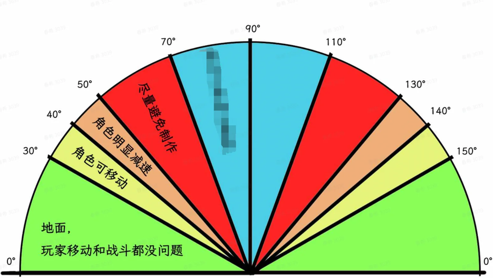
0°–30°
Fully traversable terrain. No movement or combat restrictions.
30°–40°
Traversable with reduced stability. Combat remains viable.
40°–50°
Limited traversal. Intended for controlled pathing or obstacle edges.
50°–70°
Avoid Making
70°–90°
Anonymized sensitive information
Agent Category
Standard NPC
Agent Radius
0.4 m
Agent Height
2.1 m
Step Height
0.35 m
Max Walkable Slope
40°
Agent Category
Standard NPC
Agent Radius
0.4 m
Agent Height
2.1 m
Step Height
0.35 m
Max Walkable Slope
40°
World-Scale Layout & Routing
Managed large-scale whitebox planning for regions from 1km² to 4.1km². Focused on content hierarchy (Primary/Secondary/Tertiary POIs) and exploration flow.
The Dusk Castle: Interactive 3D Whitebox
Use your mouse to Rotate (Left Click), Pan (Right Click), and Zoom (Scroll).
// High-density spatial logic validation via 3D blockout.
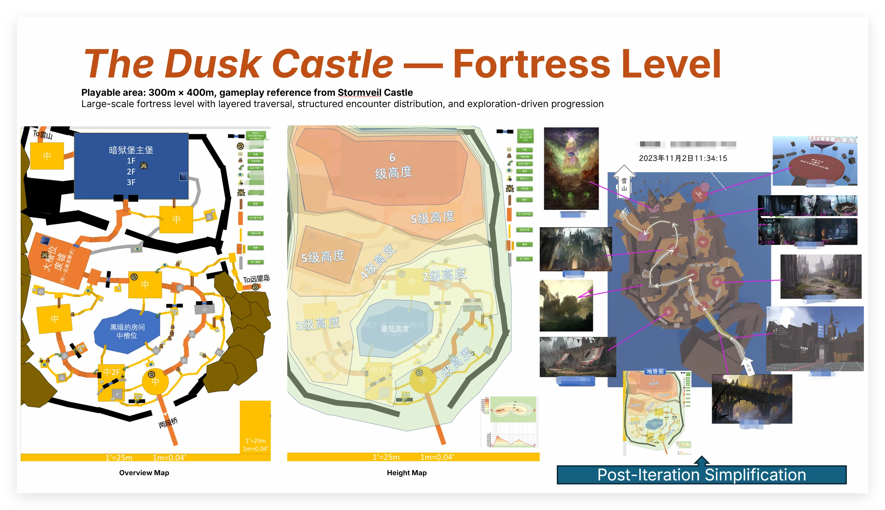
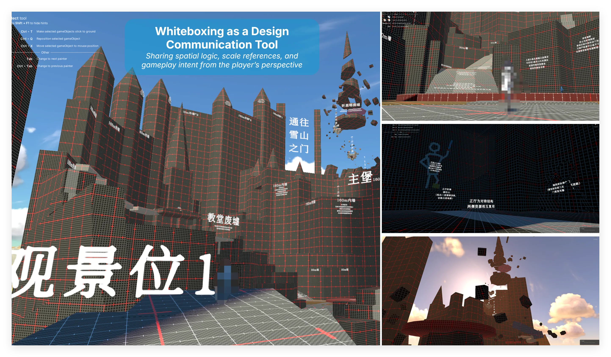
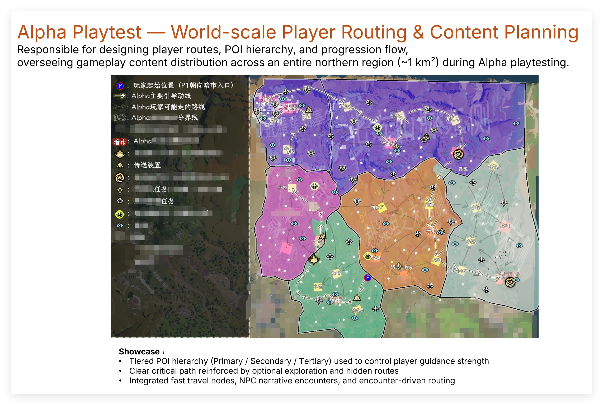
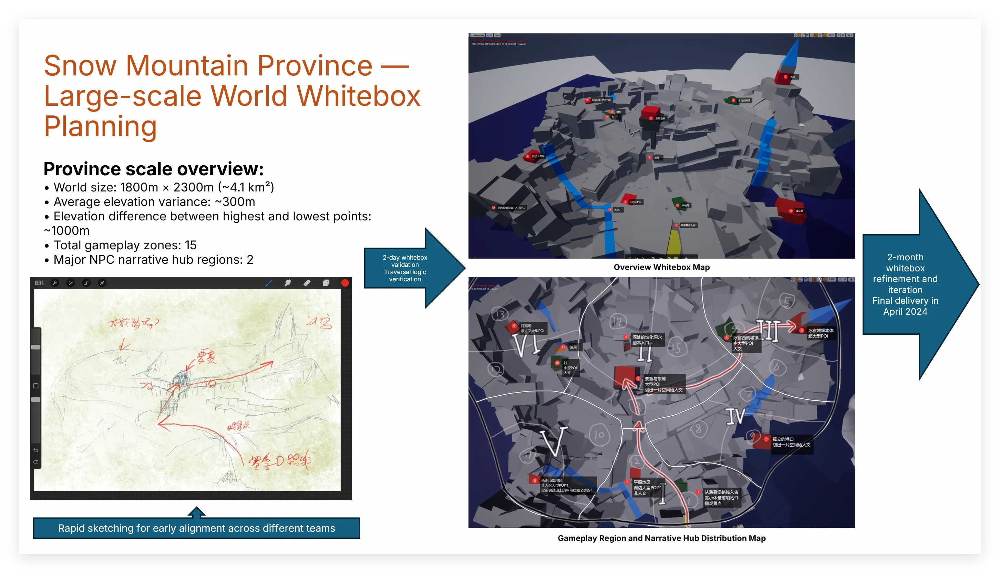
POI hierarchy control for player guidance strength.
Multi-layered routing for both Golden Path and hidden exploration.
Technical whiteboxing for cross-departmental alignment.
Production Tools & Workflow
Collaborated with the engine team to eliminate iteration bottlenecks through custom toolsets.
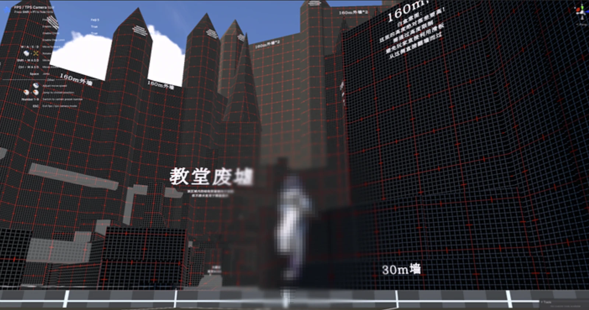
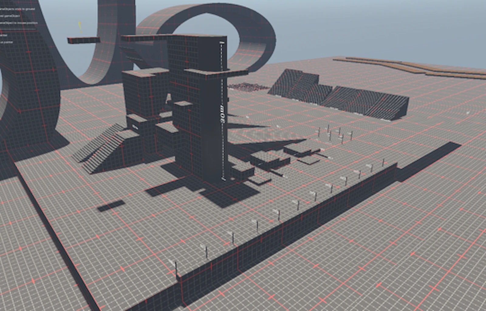
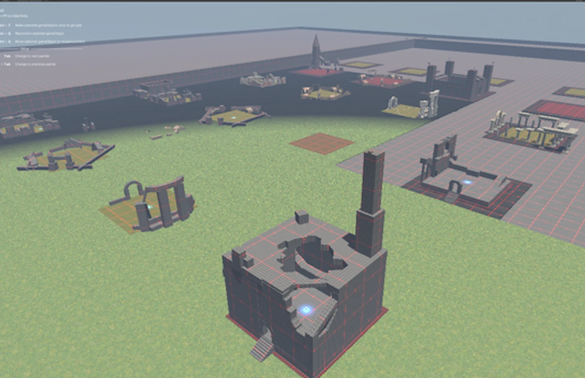
TPS Camera Tool: One-click launch from Editor to Player POV (< 1s), eliminating multi-minute boot times.
Level Slot System: Modular structures to support scalable Action RPG world production.
TECHNICAL DOCUMENTATION IS RESTRICTED. PLEASE CONTACT ME VIA E-MAIL FOR FURTHER INFO.
Project: Water Ruins (UE5)
All projects shown below were independently developed during personal time using
Unreal Engine 5.
Gameplay systems were implemented exclusively with
Blueprints,
Blueprint Interfaces, and
Gameplay Ability System (GAS),
with no external plugins used.
All art assets were legally purchased from the UE5 Fab Marketplace and are used
solely for personal learning, design exploration, and development practice.
Independently developed gameplay whitebox focused on high-density linear flow and verticality. Validating 3C mechanics through environmental navigation.
Water Ruins: Interactive 3D Whitebox
Use your mouse to Rotate (Left Click), Pan (Right Click), and Zoom (Scroll).
// High-density spatial logic validation via 3D blockout.
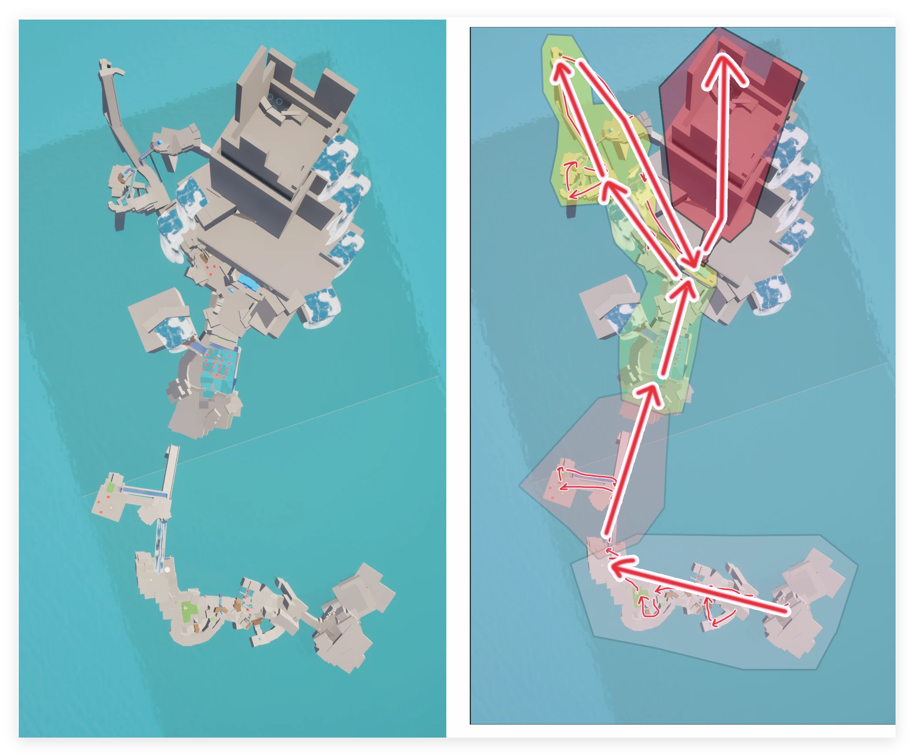
// UE5 Whitebox gameplay sequences focusing on movement pacing and 3C flow.
Project: Tiny Island
All projects shown below were independently developed during personal time using
Unreal Engine 5.
Gameplay systems were implemented exclusively with
Blueprints,
Blueprint Interfaces, and
Gameplay Ability System (GAS),
with no external plugins used.
All art assets were legally purchased from the UE5 Fab Marketplace and are used
solely for personal learning, design exploration, and development practice.
Exploring micro-scale encounter design and environmental storytelling within a compact linear space. High-intensity pacing in a 5-8 minute vertical slice.
Tiny Island: Interactive 3D Whitebox
Use your mouse to Rotate (Left Click), Pan (Right Click), and Zoom (Scroll).
// High-density spatial logic validation via 3D blockout.
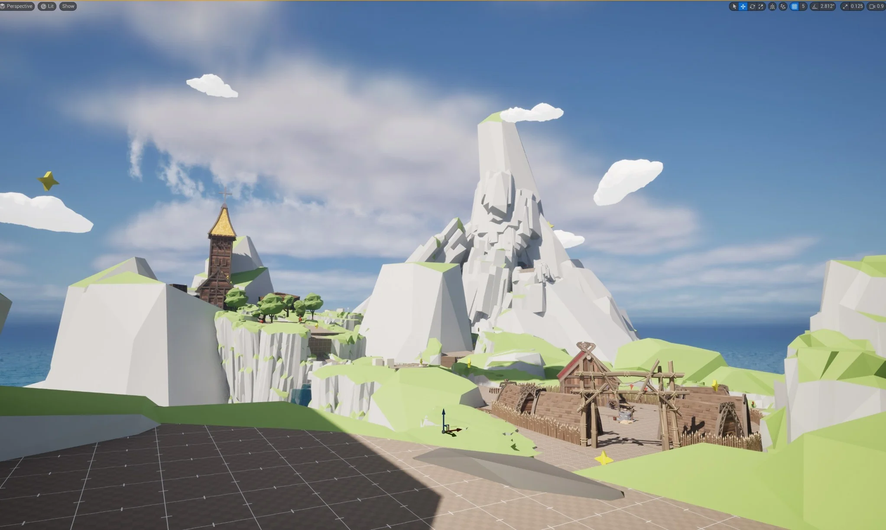
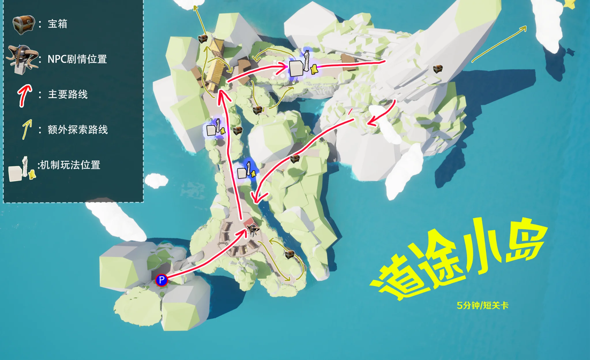
PLAYABLE BUILDS AVAILABLE UPON REQUEST VIA E-MAIL.